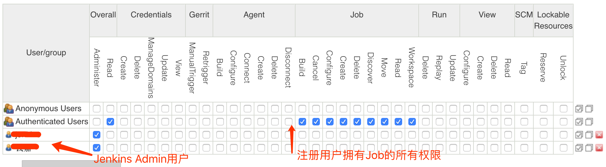

搭建Jenkins集群流水账
搭建Jenkins集群的流水账。
硬件要求
不论是master还是slave，都要安装：
- 操作系统：Ubuntu 16.04 Server LTS
- Docker-CE
Docker安装方法：
- 根据文档：https://yq.aliyun.com/articles/110806 安装docker-ce
curl -fsSL https://get.docker.com | bash -s docker --mirror Aliyunsudo usermod -aG docker $USER
我在安装的时候碰到Jenkins无法从Update center下载metadata的问题，经发现是docker的mtu比服务器网卡mtu大的问题，解决办法如下：
- 新建或者修改文件：
/etc/docker/daemon.json，添加mtu的设置比如：
{
"mtu": <服务器网卡的mtu>,
...
}
- 你可以配置docker registry mirror，同样修改
/etc/docker/daemon.json：
{
"registry-mirrors": ["..."],
...
}
然后重启docker：sudo systemctl restart docker
部署master
创建目录：mkdir $HOME/jenkins-home
启动Jenkins：
sudo docker run \
-u root \
-d \
-p 8080:8080 \
-p 50000:50000 \
-v $HOME/jenkins-home:/var/jenkins_home \
-v /var/run/docker.sock:/var/run/docker.sock \
--name jenkins \
jenkinsci/blueocean
创建ssh密钥对：ssh-keygen
初始配置Jenkins
- 浏览器访问Jenkins：
http://<jenkins-master-ip>:8080/ - 选择安装社区推荐插件
- 设置管理员用户
安全配置
配置LDAP
如果要配置LDAP，那么一定要记住，配置完之后不要注销。
系统管理 -> 全局安全设置，访问控制，选择LDAP，然后根据情况配置即可。
注意配置完之后一定要Test。
配置授权策略
系统管理 -> 全局安全设置，授权策略，项目矩阵授权策略。
打开浏览器隐私窗口，用一个账号登录，这个账号将替代当前使用的管理员账号。
下面为了方便理解，下面吧当前浏览器称为A窗口，隐私窗口浏览器称为B窗口。
回到A窗口，添加刚才登录的用户，如果正常添加，用户名上不会有删除线。然后在全部这一栏勾选Administer，点击应用。
此时A窗口的管理员账号应该就不能做任何操作了，而且再也不能登录了。
到B窗口，刷新一下，继续后面的管理员动作。
下图是推荐的配置方法：

添加Slave节点
前期准备
- 准备Slave的机器
- 安装Docker-CE
- 安装openjdk：
sudo apt install -y openjdk-8-jdk - 新建工作目录：
mkdir $HOME/jenkins-workdir - 把master的pub key添加到slave上：把master的
$HOME/.ssh/id_rsa.pub内容添加到slave的$HOME/.ssh/authorized_keys里。
到 系统管理 > 节点管理，新建节点
- 名字：slave-1
- 并发构建数：2（cpu核数）
- 远程工作目录：
<jenkins-workdir的绝对路径> - 用法：尽可能的使用这个节点
- 启动方式：Launch agent agents via SSH
- Host：
<slave的ip> - Credentials：这个时候要创建一个平局，方法如下：
- Domain，全局凭据
- 类型：SSH username with private key
- username:
<slave的操作系统用户名> - private key: 把master
$HOME/.ssh/id_rsa的内容贴上去 - Passphrase:
<blank> - ID:
<blank> - 描述：For slave connection
- Host Key Verification Strategy：Non verifying Verification Strategy
- 保存
- 修改master节点，执行者数量设置为0，这样就能避免Job分配到master上。
安装其他插件
系统管理 -> 插件管理，安装下列插件：
- Config File Provider
- Pipeline Maven
- Coding Plugin
- Rancher Plugin
- TestNG Results
- SonarQube Scanner
配置工具
系统管理 -> 全局工具配置，都选择自动安装，下面列出的是工具的名字
- JDK：JDK6、JDK7、JDK8，要输入oracle网站账号密码
- Maven：Maven3
- Docker：Docker
配置时区
用Docker启动Jenkins时区是GMT+0
见wiki：https://wiki.jenkins.io/display/JENKINS/Change+time+zone
系统管理 -> 脚本命令行
System.setProperty('org.apache.commons.jelly.tags.fmt.timeZone', 'Asia/Shanghai')
清理重装方法
如果你配置错误搞砸了，想从头开始，那么这么做，只需要这么几步：
- ssh到master上：
sudo docker stop jenkinssudo rm -rf $HOME/jenkins-home/*